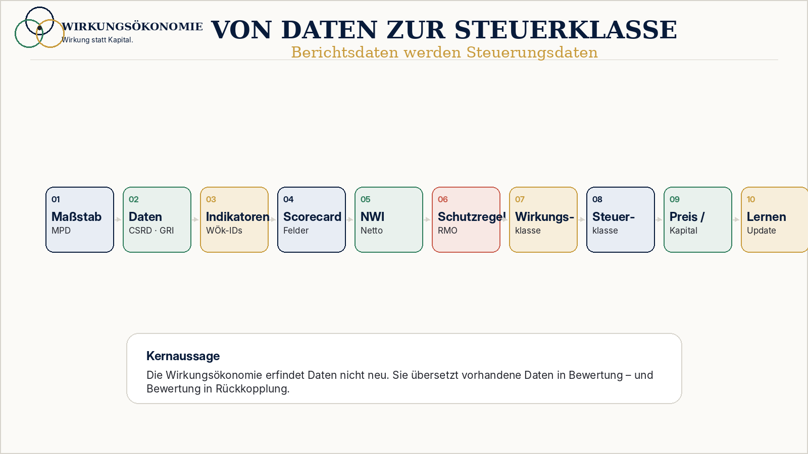

Problem
Wirkungsblindheit
Das System misst Bewegung, Kapital und Output - aber nicht zuverlässig, was dadurch mit Mensch, Planet und Demokratie geschieht.
Begriff im Glossar Wirkungsökonomie
Wirkungsökonomie
Das Modell
Die Wirkungsökonomie zeigt, wie aus Wirkung ein Maßstab für Entscheidungen wird. Sie beginnt nicht mit einer Kennnummer, sondern mit der Frage: Woran messen wir Erfolg?
Gewinn und Wachstum zeigen nicht, ob etwas Menschen stärkt, den Planeten schützt oder Demokratie stabilisiert. Kapital zeigt, wo Geld fließt. Es zeigt aber nicht automatisch, ob Lebensgrundlagen, Vertrauen oder Teilhabe gestärkt werden.
Grundkreislauf
Jede Handlung und jedes Unterlassen kann Folgen auslösen. Die Wirkungsökonomie beginnt deshalb vor der Wirkung: bei Auslösern, Wirkstoffen als didaktischer Analogie, Wirkungspotenzialen, Wirkungsrisiken und Wirkmechanismen. Erst wenn sich Zustände tatsächlich verändern, sprechen wir von Wirkung. Die Wirkungsökonomie bewertet diese Veränderung, fasst positive und negative Folgen als Netto-Wirkung zusammen und übersetzt die Bewertung in Entscheidungen. Für politische Sprache zeigt die Narrativanalyse, wie Wirkungspotenziale in demokratischen Resonanzräumen entstehen können.
Der Grundablauf lautet: Auslöser → Wirkstoff als didaktische Analogie → Wirkungspotenzial oder Wirkungsrisiko → Wirkmechanismus → IOOI-Wirkpfad (Input → Aktivität → Output → Outcome → Impact) → eingetretene Zustandsveränderung → Nebenwirkungen, Wechselwirkungen oder Rebound → Wirkungsbewertung → Netto-Wirkung → Schutzregeln und Nichtkompensation → Transformationswirkung → Wirkungslenkung, Rückkopplung und Lernen → neue Systemzustände. Wirkung ist dabei nicht gleich Bewertung: Wirkung beschreibt die Zustandsveränderung, Wirkungsbewertung ordnet sie am Referenzrahmen ein, Netto-Wirkung verbindet positive und negative Folgen.
Wirkung allein sagt noch nicht, ob eine Veränderung gut oder schädlich ist. Dafür braucht es einen Referenzrahmen. Die Wirkungsökonomie nutzt dafür die SDGs und die Agenda 2030 als global verhandelten Zielrahmen. Ergänzt werden sie durch SDG+, weil demokratische Stabilität, Medienqualität, Rechtsstaatlichkeit, Diskursfähigkeit und institutionelles Vertrauen entscheidende Voraussetzungen sind, damit die SDGs überhaupt erreicht werden können.

Begriffsstrategie
Die Wirkungsökonomie braucht nicht viele neue Begriffe. Drei Leitbegriffe reichen, um das Kernproblem, den Anspruch und den Mechanismus sichtbar zu machen.
Problem
Das System misst Bewegung, Kapital und Output - aber nicht zuverlässig, was dadurch mit Mensch, Planet und Demokratie geschieht.
Begriff im GlossarAnspruch
Preise, Berichte oder politische Aussagen sollen ihre tatsächlichen Wirkungen sichtbar machen, statt zentrale Folgen zu verdecken.
Begriff im GlossarMechanismus
Selbst vorhandene Wirkungsdaten verändern Preise, Steuern, Kapital und Entscheidungen zu wenig. Die WÖk führt Bewertung in Anreize zurück.
Begriff im GlossarDie Wirkungsökonomie setzt genau hier an: Wirkung sichtbar machen, bewerten und rückkoppeln.
Der Maßstab: SDGs, Agenda 2030 und SDG+
Eine Wirkung ist immer auf einen Wirkungsempfänger und einen Wirkungsraum bezogen. Sie kann kurzfristig für einzelne Akteure vorteilhaft sein und langfristig systemisch schädlich wirken. Die Wirkungsökonomie trennt deshalb Einzelwirkung, Systemwirkung und Netto-Wirkung.

Einzelwirkung
Einzelwirkung zeigt, wer unmittelbar profitiert oder belastet wird.
Systemwirkung
Systemwirkung macht Rückkopplungen, Nebenwirkungen, Zielkonflikte und langfristige Stabilität sichtbar.
Netto-Wirkung
Netto-Wirkung fragt, ob eine Veränderung insgesamt auf die SDGs, Agenda 2030 und SDG+ einzahlt.
Normativer Maßstab
Positive Wirkung für eine Gruppe darf schwere negative Wirkung auf andere Gruppen, Ökosysteme, Tiere oder demokratische Grundbedingungen nicht einfach ausgleichen.
Prozesslogik
Die Wirkungsökonomie beginnt nicht mit einer Kennnummer, sondern mit der Frage, woran Erfolg gemessen wird.

Mensch, Planet und Demokratie bilden den normativen Rahmen. Die SDGs und die Agenda 2030 geben den global verhandelten Zielrahmen für Mensch und Planet. SDG+ ergänzt Demokratie, Medienqualität, Rechtsstaatlichkeit, Diskursfähigkeit, institutionelles Vertrauen und digitale Selbstbestimmung. Erst daraus leiten sich Wirkungsfelder, Indikatoren und Bewertungen ab.
Vorhandene Daten aus SDGs, CSRD, ESRS, GRI, Lieferketten, Produktdaten und digitalen Produktpässen werden genutzt.
Daten werden Wirkungsfeldern wie Klima, Ressourcen, Arbeit, Gesundheit, Demokratie und Vertrauen zugeordnet.
Aus Daten werden bewertbare Indikatoren mit Bezugsgröße, Datenquelle, Bewertungsrichtung, Schwellenwerten und Benchmarks.
Die Bewertung zeigt, wo etwas stärkt und wo es schädigt. Fachlich wird diese strukturierte Bewertung Scorecard genannt.
Positive und negative Wirkungen werden zusammen betrachtet. Der Netto-Wirkungs-Index zeigt, ob unter dem Strich Nutzen oder Schaden überwiegt.
Schaden darf nicht durch gute Werte an anderer Stelle versteckt werden. Das schlechteste Wirkungsfeld zählt. Dieses Prinzip heißt Reverse Merit Order.
Aus Scorecard, Netto-Wirkung und Schutzregel entsteht eine Wirkungsklasse. Sie verdichtet die Bewertung, ohne kritische Felder zu verdecken.
Die Wirkungsklasse wirkt zurück in Steuern, Preise, Förderung, Kapitalzugang, Beschaffung und Entscheidungen.
WÖk-IDs, Wirkungsrat, Datenqualität und Versionierung sichern Vergleichbarkeit, Transparenz und Weiterentwicklung.
Gesamtmodell
Die vollständige Modellgrafik zeigt, wie aus der Frage nach Wirkung Daten, Bewertung, bessere Anreize und Lernen entstehen.

Bausteine
Die Bausteine folgen dem Lernweg: erst der Maßstab, dann Daten und Bewertung, dann Schutzregel, Rückkopplung und Governance.
Maßstab
Der Maßstab beantwortet die erste Frage: Woran messen wir Erfolg? Wirkung wird danach bewertet, ob sie Menschen stärkt, den Planeten schützt und Demokratie stabilisiert.
Datenbasis
Die Wirkungsökonomie erfindet nicht alle Daten neu. Sie übersetzt vorhandene Daten aus SDGs, CSRD, ESRS, GRI, Produktpässen, Lieferketten, Finanzmarkt- und Risikodaten in Wirkung und Rückkopplung. Die Quellenlogik steht im Methodikbereich.
Wirkungsbewertung
Aus Daten werden Indikatoren mit Bezugsgröße, Bewertungsrichtung und Schwellenwerten. Die Scorecard zeigt, wo etwas stärkt und wo es schädigt.
Schutzregel
Schaden kann nicht durch gute Werte an anderer Stelle versteckt werden. Kinderarbeit bleibt Kinderarbeit - auch bei guter CO₂-Bilanz. Der Fachbegriff dafür ist Reverse Merit Order.
Rückkopplung
Wirkung bleibt nicht im Bericht stehen. Sie wirkt zurück in Preise, Steuern, Förderung, Kapitalzugang, Beschaffung und politische Entscheidungen.
Governance
Die WÖk-ID sorgt dafür, dass Wirkungsindikatoren eindeutig benannt, versioniert und überprüfbar bleiben. Sie ist nicht der Einstieg in die Wirkungsökonomie, sondern ein Instrument für Vergleichbarkeit und Qualität.
Bewertungslogik
Die Wirkungsökonomie verhindert Schönrechnung. Wenn ein Produkt beim Klima gut abschneidet, aber auf Kinderarbeit beruht, bleibt es schädlich. Wenn ein Unternehmen hohe Gewinne erzielt, aber Demokratie, Gesundheit oder ökologische Grundlagen schwächt, kann diese Wirkung nicht durch einzelne positive Maßnahmen ausgeglichen werden.

Datenbasis
Sie baut auf vorhandenen und entstehenden Daten auf: SDGs als globaler Zielrahmen, CSRD und ESRS als europäische Berichtsdaten, GRI als etablierter Reportingstandard, digitale Produktpässe als produktbezogene Datenbasis, Lieferkettendaten, Produktdaten sowie Finanzmarkt- und Risikodaten. Die konkrete Quellen- und Mappinglogik ist auf der Seite Datenbasis und Methodik dokumentiert.
Die Kernaussage: Die Wirkungsökonomie übersetzt vorhandene Daten in Wirkung und Rückkopplung. Aus Berichtsdaten werden Bewertungsdaten. Aus Bewertungsdaten werden Signale für Preise, Steuern, Kapital und Entscheidungen.
Zurückwirken
Preise
Produkte mit negativer Wirkung werden teurer, Produkte mit positiver Wirkung günstiger.
Steuern
Steuerlast richtet sich an Wirkung aus, nicht nur an Produktkategorien oder Einkommen.
Kapital
Investitionen fließen dorthin, wo positive Netto-Wirkung entsteht.
Politik
Maßnahmen werden nicht nur angekündigt, sondern an Wirkung überprüft.
Öffentlichkeit
Medien, Sprache und Plattformen werden als Wirkungsräume sichtbar.
Wirkung politischer Sprache ansehenSDG+ Medien & Demokratie
Politische Sprache erzeugt Wirkungspotenziale. Die Narrativanalyse zeigt, wie Frames Resonanzräume öffnen und Vertrauen, Angst, Spaltung oder demokratische Stabilität verändern.
Zur NarrativanalyseReporting
Berichte machen sichtbar, was erhoben wurde. Die Wirkungsökonomie sorgt dafür, dass diese Daten Folgen haben - in Preisen, Steuern, Investitionen und Entscheidungen.
Klassisches Reporting
Dokumentiert, erklärt, kommuniziert und bleibt häufig folgenlos.
Wirkungsökonomie
Bewertet, verändert Preise, Steuern und Kapital und macht Lernen möglich.
Instrumente